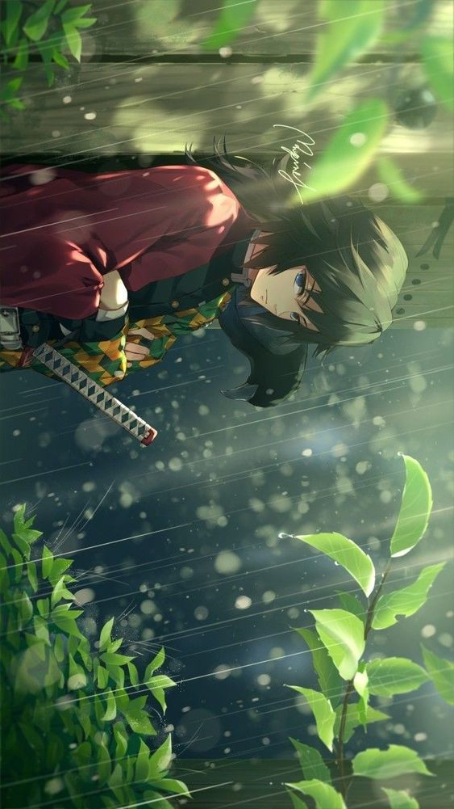

Demon slayer is the team/oraganization which protect the mankind from the destuctive demon , who are threat for the mankind
.The member of demon slayer uses a unique breathing techniques which enhance there ability and give them super human strength.
1.HASHIRAS

TOMIOKA GIYU the present water hashira is one of the strongest slayer in demon slayer series
.In the series he is kind of introvet person but he is also kind and good boy.
He uses the water breathing style which was originated from the first breathing style SUN BREATHING.